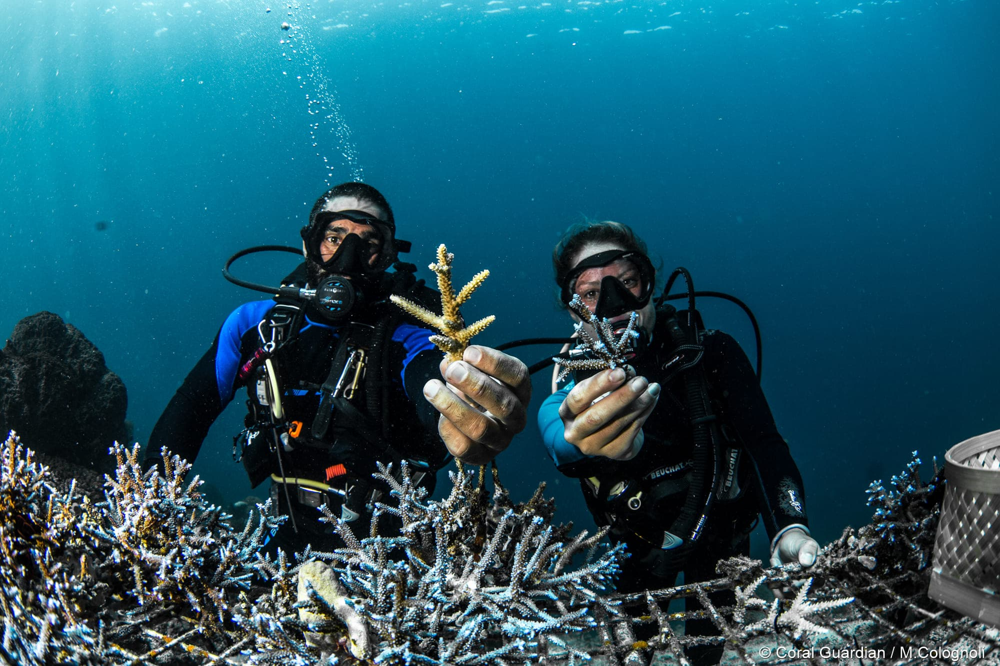
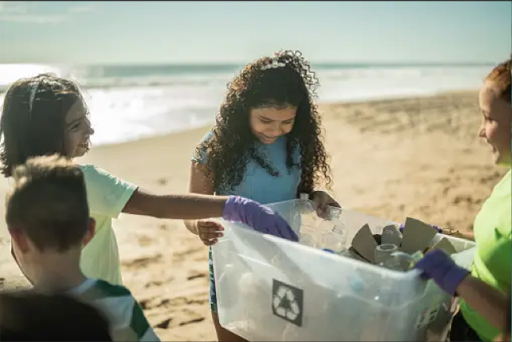

In a world increasingly beset by environmental challenges, the need for sustainable living practices has
never been more urgent. With climate change, resource depletion, and pollution threatening the delicate
balance of our planet's ecosystems, individuals and communities alike are seeking alternatives that tread
more lightly on the Earth. Enter eco-friendly alternatives – innovative solutions that offer a glimmer of
hope in the quest for a more sustainable future.
Eco-friendly alternatives encompass a wide range of practices, products, and technologies designed to
minimize environmental impact while still meeting human needs. From renewable energy sources to zero-waste
lifestyles, these alternatives prioritize sustainability and conservation over short-term convenience or
profit. By embracing eco-friendly alternatives, individuals can significantly reduce their ecological
footprint and contribute to the preservation of our planet for future generations.
Reusable Water Bottles: Instead of buying single-use plastic water bottles, consider investing in a reusable
water bottle made from materials like stainless steel, glass, or BPA-free plastic. Not only do these bottles
help reduce plastic waste, but they also keep your drinks fresh and free from harmful chemicals. Say goodbye
to single-use plastic bags by opting for reusable shopping bags made from materials such as cotton, jute, or
recycled plastics. These durable and stylish bags are perfect for carrying groceries, clothes, or any other
items, while also reducing your plastic consumption.
Join the movement against disposable plastic straws by
switching to reusable straws made from materials like stainless steel, bamboo, or silicone. These straws are
easy to clean, durable, and can be used again and again, helping to reduce plastic pollution in our oceans
and waterways. Ditch single-use plastic bags and containers for packed lunches and leftovers by using
reusable food containers and lunchboxes made from materials like stainless steel or glass. These containers
are not only better for the environment but also keep your food fresh and organized.
Make the switch to environmentally friendly cleaning products that are biodegradable and free from harsh
chemicals. Look for
products labeled as eco-friendly or made from natural ingredients to keep your home clean and safe for your
family and the planet. Reduce plastic waste in your home by using compostable bin liners made from materials
like cornstarch or recycled paper. These liners are a sustainable alternative to traditional plastic garbage
bags and can help divert organic waste from landfills. Swap disposable paper napkins and towels for reusable
cloth alternatives. Not only do cloth napkins and towels reduce paper waste, but they also add a touch of
elegance to your table settings and kitchen decor.
Choose toothbrushes made from plant-based materials or
bamboo for a biodegradable alternative to plastic toothbrushes. These eco-friendly toothbrushes are gentle
on your teeth and gums, while also being kind to the planet. Say goodbye to plastic cling wrap and opt for
beeswax wraps for storing food. These reusable wraps are made from cotton fabric coated in beeswax, resin,
and jojoba oil, providing a natural and sustainable way to keep your food fresh. Reduce plastic waste in
your bathroom by using bar soap and shampoo bars packaged in minimal or compostable packaging. These
products eliminate the need for plastic bottles and reduce packaging waste, making them a great choice for
eco-conscious consumers. Enjoy your favorite hot beverages on the go with reusable coffee cups made from
materials like stainless steel or bamboo. These cups are not only stylish and convenient but also help
reduce the billions of disposable coffee cups that end up in landfills each year. Make your mark with
stationery products made from recycled materials, such as recycled paper notebooks, pens made from recycled
plastics, and eco-friendly pencils. These sustainable stationery options are perfect for students, artists,
and anyone who loves to write and create. Light up your outdoor spaces with solar-powered outdoor lights for
an energy-efficient and eco-friendly lighting solution.
These lights harness the power of the sun to
illuminate your garden, patio, or pathway, while also reducing your electricity consumption and carbon
footprint. Switch to reusable razors with replaceable blades made from stainless steel or other durable
materials for a sustainable alternative to disposable plastic razors. Not only do these razors provide a
close and comfortable shave, but they also help reduce plastic waste in our landfills and oceans.
Preserving biodiversity and resilience of aquatic ecosystems requires the conservation and restoration of marine habitats. Adopting environmentally friendly substitutes means contributing to maritime conservation initiatives, like the creation of marine protected zones and the rehabilitation of mangrove forests, seagrass beds, and coral reefs. These programmes serve human populations by protecting coastlines and sequestering carbon, among other important ecosystem services that also benefit marine life. Additionally, adopting sustainable fishing methods, such using selective fishing gear and setting fishing quotas, contributes to the preservation of fisheries and the delicate balance of marine ecosystems. Additionally, encouraging eco-friendly tourism behaviours reduces the negative effects of human activity on marine environments and raises visitor understanding of conservation issues. Examples of these practices include ethical diving and snorkelling. By adopting these eco-friendly alternatives and actively participating in marine conservation efforts, individuals and communities can contribute to the preservation of our oceans and ensure a sustainable future for generations to come.
IRaising awareness about the importance of eco-friendly alternatives below water is essential for inspiring collective action and behavior change. Education initiatives that highlight the interconnectedness of human activities and marine ecosystems can empower individuals to make informed choices and take action to protect the ocean environment. By fostering a deeper understanding of the challenges facing our oceans and the solutions available, we can create a culture of stewardship and sustainability that extends below the water's surface. Moreover, promoting citizen science programs and community engagement activities allows individuals to actively participate in monitoring and conserving marine ecosystems, fostering a sense of ownership and responsibility towards ocean conservation. Additionally, integrating marine conservation topics into school curricula and educational programs helps to instill environmental values and practices from a young age, shaping future generations of environmentally conscious citizens. Through collaborative efforts between governments, non-profit organizations, businesses, and local communities, we can amplify the message of ocean conservation and inspire widespread action towards a healthier and more sustainable marine environment.
Embracing eco-friendly alternatives below water is essential for promoting sustainable living and safeguarding the health of our oceans and waterways. By addressing plastic pollution, making sustainable seafood choices, supporting marine conservation and restoration efforts, investing in renewable energy solutions, and raising awareness through education, individuals and communities can play a crucial role in protecting marine ecosystems and ensuring a healthier planet for future generations. Together, we can build a more sustainable future both above and below the waves.
